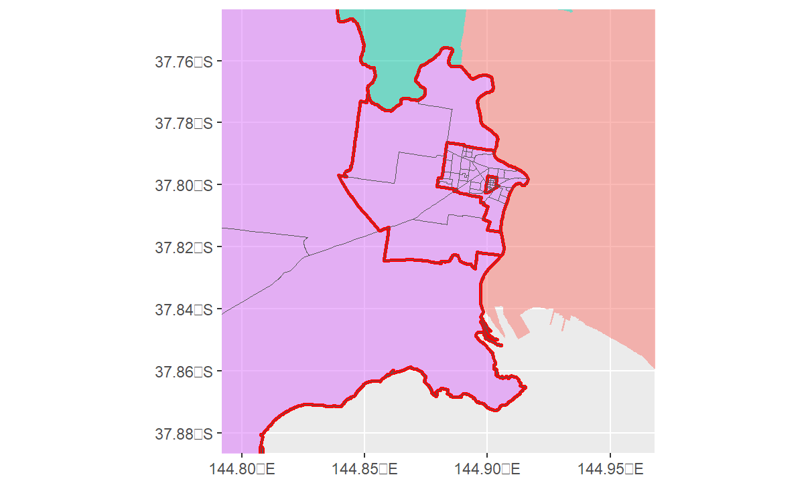
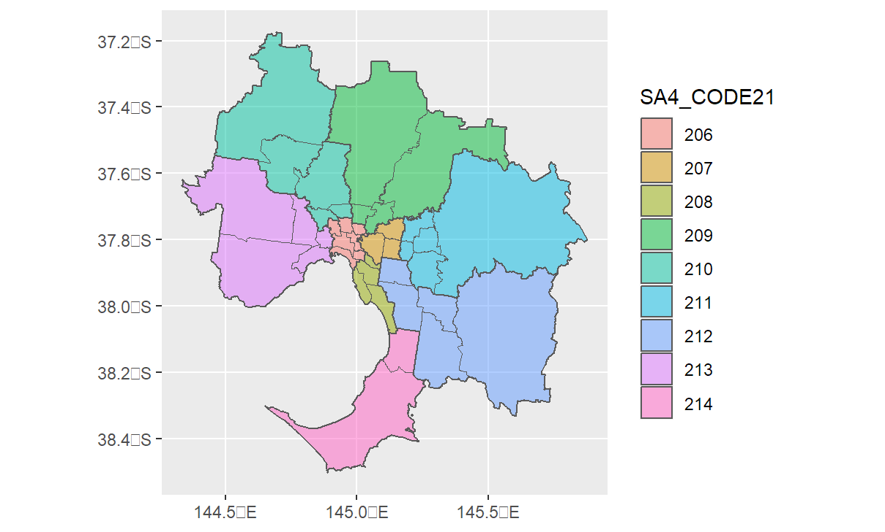

3 Hierarchically structured spatial metapopulation models
In Section 2.1, we observed the construction of a meta-population mixing matrix from empirical origin-destination (OD) data. The patches used in the example were based on the ‘SA3’ regions of the Australian Statistical Geography Standard’s Statistical Areas (SA) classification (Australian Statistical Geography Standard (ASGS), 2023) (comprising forty patches for the Greater Melbourne area in that example).
3.1 Hierarchical Structure of the SA classification
An important feature of the SA classification structure is that there are multiples scale of classification and that lower levels of SA are hierarchically nested within higher levels. For example, several SA3 regions are contained within a single SA4 region, and multiple SA4 regions are contained within the Greater Melbourne Capital City SA (GMCCSA). Moreover, each SA3 region is partitioned into a number of SA2 scale regions (in the case of he GMCCSA, 361 of them), which in turn are divided further into (for GMCCSA, 20xx) SA1 scale regions. Figure 3.1 (b) shows the SA2, SA3, and SA4 regions of the GMCCSA.


For specific example, the Maribyrnong (SA3) region sits inside the West Melbourne (SA4) region alongside Essendon (SA3) Figure 3.2. Both West Melbourne and the neighbouring ‘Inner Melbourne’ (SA4), containing the city center and other SA3 regions, are part of the GSCCSA. Moreover, within Marybirnong (SA3) there are six SA2 level regions (Braybrook, Footscray, Maribyrnong, Seddon - Kingsville, West Footscray - Tottenham, Yarraville), which can likewise be partitioned in to smaller SA1 level and ‘Mesh Block’ level regions Figure 3.1 (a). In Figure 3.2, we highlight the SA1 region comprising the main footscray CBD (SA1 code ‘21303134811’; see Figure 3.3).
Helpfully, Statistical Areas are also indexed by a structured code representing their classification hierarchy. For example, SA1 regions are denoted by an 11 digit code which can be decomposed into the higher level areas in which the region sits. Figure 3.3 demonstrates this for an SA1 region in the area considered above.